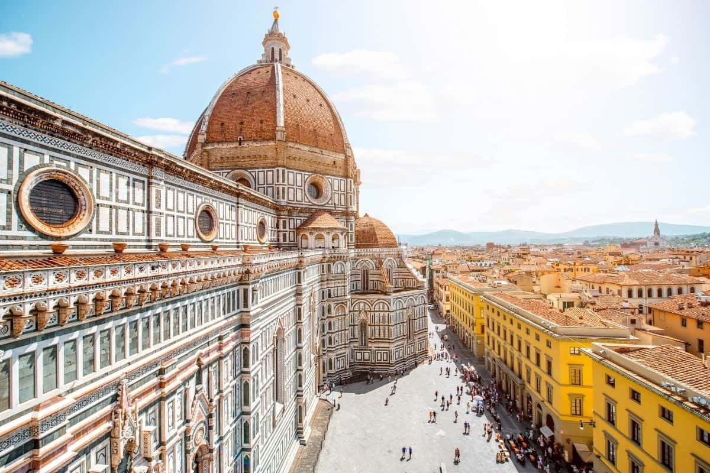
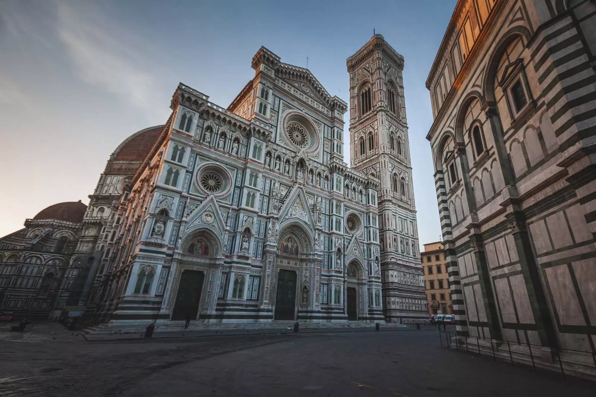
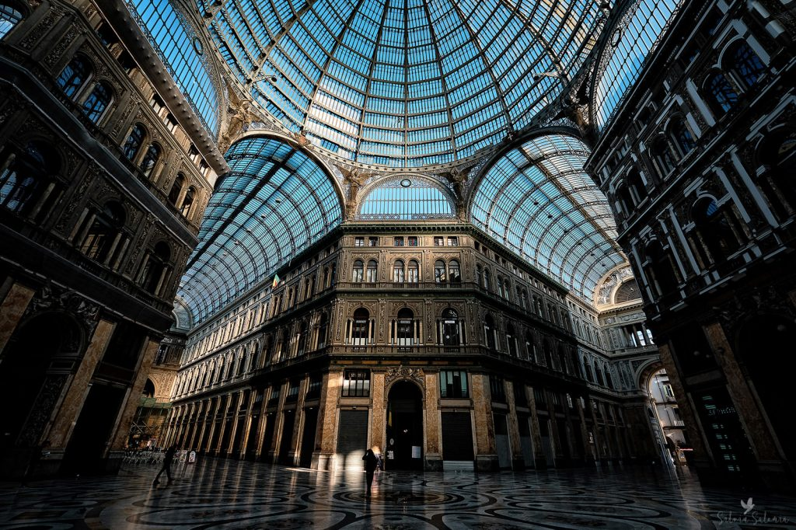
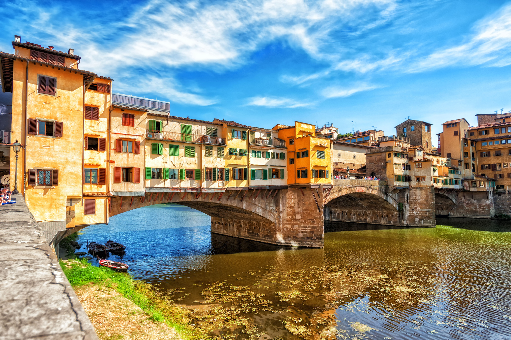
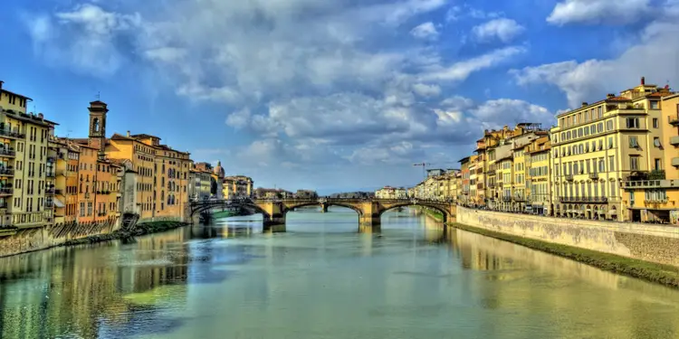
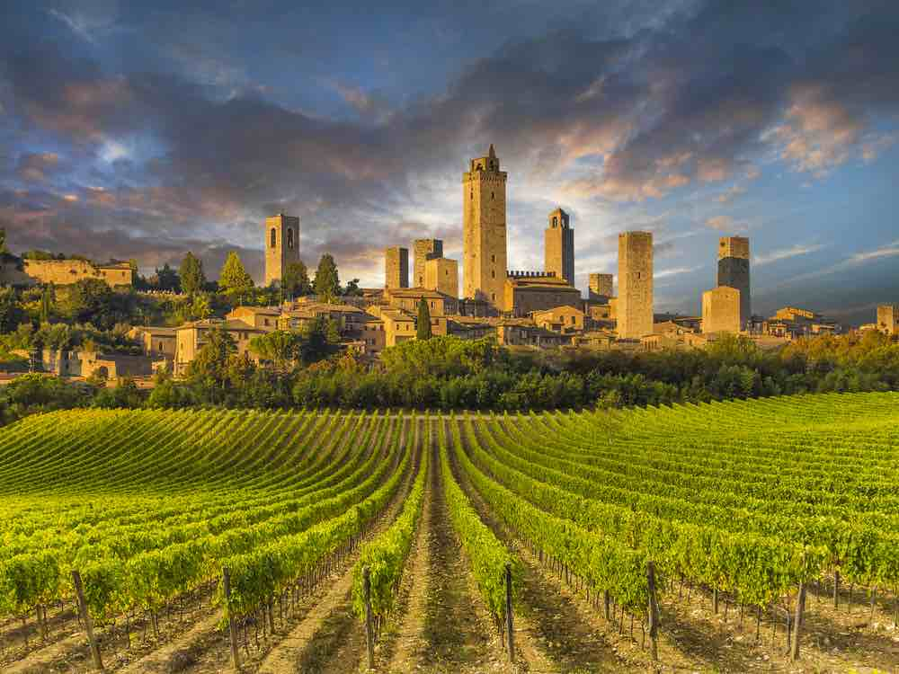

Orașul se află pe râul Arno și este cunoscut pentru istoria și importanța sa în
Evul Mediu și în Renaștere, în special pentru arta și arhitectura sa. Un centru comercial și economic
medieval, fiind unul dintre cele mai bogate orașe ale timpurilor, Florența este considerat locul de
naștere al Renașterii italiene; de fapt a fost numită Atena din Evul Mediu. A fost mult timp sub
conducerea de facto a Familiei Medici. Din 1865 până în 1870 orașul a fost de asemenea capitala
Regatului Italiei.


Printre obiectivele turistice cele mai spectaculoase, se numară: Catedrala Santa Maria del Fiore, campanila și baptisteriul San Giovanni, Biblioteca "Laurenziana" a lui
Michelangelo; Ponte Vecchio; Universitatea (1321), Academia de Artă, muzee renumite
(mai ales Galeria Uffizi, Palazzo Pitti, Muzeul Național Bargello, Muzeul de Arheologie);
Biblioteca Națională; Centrul de Circulație; Palatul Gondi; Palatul Medici; Biserica Santa Maria Novella;
Biserica Santa Trinità; Catedrala Santa Croce; Biserica San Lorenzo; Piața Michelangelo
(unde se află o copie a statuii lui David de Michelangelo) etc.

Un coridor secret (asemănător "Pasajului Borgo" din Vatican) se găsește la Florența.
La cererea ducelui Cosimo I de Medici, Giorgio Vasari a construit în 1565 "Il Corridoio vasariano",
o pasarelă secretă, care unea Palazzo Vecchio (reședința oficială) cu Palazzo Pitti, parcurgând
Muzeul Uffizi și traversând apoi fluviul Arno peste Ponte Vecchio. Coridorul a servit ca posibilitate
de refugiu pentru familia ducală, în caz de necesitate.



